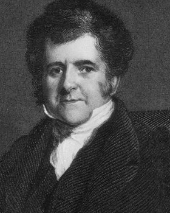
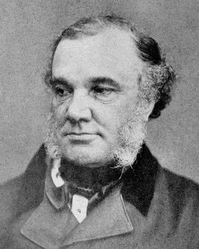
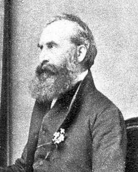
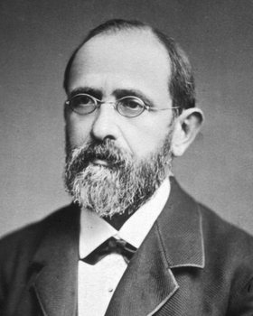
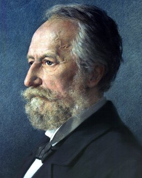
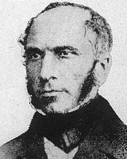

SUPPORTO ALLO STUDIO
Le formule che tornano in tutta la fisiologia, lette una variabile alla volta: che cosa misura ciascuna, in quale unità e con quali dimensioni, così che il conto torni prima ancora di fare i numeri.
Il corpo di un adulto è fatto d'acqua per circa il 60% del peso (circa il 75% nel neonato, meno nell'anziano e in chi ha più tessuto adiposo). In una persona di 70 kg sono circa 42 litri, divisi in tre comparti in serie: plasma, interstizio e cellule. Tra plasma e interstizio c'è la parete del capillare; tra interstizio e cellule la membrana cellulare.
L'acqua attraversa liberamente entrambe le barriere, quindi i tre comparti hanno la stessa osmolalità (circa 290 mOsm/kg). La composizione invece è diversa: sodio fuori dalle cellule, potassio dentro, proteine nel plasma e nelle cellule ma quasi assenti nell'interstizio. Per leggere questo sistema servono poche chiavi:
[Na⁺] = concentrazione di sodio nel plasma [N L⁻³], mmol/L; Nae e Ke = sodio e potassio scambiabili di tutto il corpo [N], mmol; TBW (total body water, acqua corporea totale) [L³], L.
Che cos'è. L'equazione di Starling descrive il ruolo delle forze idrostatiche e oncotiche (le forze di Starling) nel movimento di liquido attraverso la parete dei capillari. Nasce da un'ipotesi formulata nel 1896 dal fisiologo inglese Ernest Starling.
A cosa serve. A prevedere se in un tessuto il liquido esce dal capillare o ci rientra. Quindi a capire perché compare un edema, o perché un tessuto si asciuga, e quale delle forze è cambiata.
Chi era. Ernest Henry Starling (Londra 1866 – 1927) entrò a 16 anni alla scuola di medicina del Guy's Hospital. Nel 1892 andò a Breslavia a lavorare con Rudolf Heidenhain, e dal 1899 fu professore di fisiologia all'University College di Londra.
Il Guy's Hospital. La scuola in cui entrò Starling aveva già una tradizione. Nella prima metà dell'Ottocento vi avevano lavorato insieme i «tre grandi del Guy's»: Richard Bright (1789–1858), Thomas Addison (1793–1860) e Thomas Hodgkin (1798–1866). Tutti e tre confrontavano i sintomi del malato con quello che trovavano all'autopsia, e ciascuno ha dato il nome a una malattia. Bright è quello che ci riguarda: tra il 1827 e il 1836 collegò l'idropisia (l'edema), l'urina che coagula al calore e i reni alterati. È lo stesso edema da perdita di proteine che l'equazione di Starling avrebbe poi spiegato.



Qual era la domanda. Come si forma la linfa? Per Carl Ludwig era plasma filtrato attraverso la parete dei capillari, spinto dalla pressione del sangue.

Chi era Heidenhain. Rudolf Heidenhain (1834–1897), professore di fisiologia a Breslavia dal 1859, quando aveva 25 anni. Era il grande studioso della secrezione: dimostrò che saliva e succo gastrico sono prodotti attivi delle ghiandole e che le cellule dei tubuli renali secernono (lo fece vedere con un colorante, l'indaco carminio). Mise a punto la «tasca gastrica» poi perfezionata da Pavlov, che lavorò nel suo laboratorio. Sulle ghiandole e sul rene aveva ragione: l'errore fu estendere la stessa idea ai capillari. Suo figlio Martin (1864–1949), professore di anatomia a Tubinga, è l'istologo dell'ematossilina ferrica di Heidenhain.
L'idea di Heidenhain. La linfa non filtra passivamente: la parete del capillare la produce attivamente, come una ghiandola produce la saliva. Lo pensava per due indizi che con la sola filtrazione non tornavano:
Conclusione di Heidenhain: la fisica non basta, servono cellule che secernono.
La risposta di Starling. Heidenhain guardava la pressione sbagliata. Gli stessi dati si spiegano con due sole variabili fisiche:
Nessuna secrezione, quindi: pressione capillare e permeabilità, cioè due dei termini dell'equazione.
L'esperimento del 1896. Restava da capire come il liquido torna indietro. Starling iniettò soluzione salina nei tessuti della zampa posteriore di un cane e vide che passava direttamente nel sangue; il plasma iniettato allo stesso modo, invece, restava lì. La sua spiegazione: la parete lascia passare sali e acqua ma trattiene le proteine, e le proteine del plasma esercitano una pressione osmotica piccola, ma dello stesso ordine di grandezza della pressione nei capillari. Due forze opposte che quasi si bilanciano: è l'idea che ancora oggi porta il suo nome, in un articolo di quattordici pagine.
L'equazione non è sua. Starling formulò l'ipotesi a parole. Le misure dirette arrivarono dopo (Landis nel 1927, Pappenheimer e Soto-Rivera nel 1948), e la forma di oggi, con il coefficiente σ, nasce più di mezzo secolo dopo dal lavoro di Staverman e di Kedem e Katchalsky.
Lo stesso Starling. Con il cognato William Bayliss scoprì la secretina (1902) e introdusse la parola «ormone» (1905); poi studiò il cuore come pompa. La legge di Frank-Starling dell'animazione qui sotto è sua.
L'acqua attraversa la parete del capillare in due modi:
L'equazione di Starling riguarda solo la filtrazione. Gli ordini di grandezza:
| Processo | Al minuto | Al giorno |
|---|---|---|
| filtrazione nei capillari glomerulari | 125 mL | circa 180 L |
| filtrazione in tutti gli altri capillari del corpo | circa 20 mL | circa 29 L |
| diffusione di acqua attraverso tutti i capillari | circa 56 L | circa 80 000 L |
Controprova: 125 mL/min × 1440 min = 180 L; 20 mL/min × 1440 min = 28,8 L; 80 000 L / 1440 min ≈ 56 L/min. La diffusione scambia migliaia di volte più acqua della filtrazione, ma senza spostare volume: è la filtrazione che decide se un tessuto si gonfia.
Jv = Kf · [(Pc − Pi) − σ(πc − πi)]
Convenzione dei segni: una forza che spinge fuori dal capillare è positiva, una che richiama dentro è negativa. Se Jv è positivo il liquido tende a uscire (filtrazione); se è negativo tende a rientrare (assorbimento). Quindi Pc spinge fuori e Pi si oppone; πc, la pressione oncotica delle proteine del plasma (soprattutto albumina), richiama dentro e πi richiama fuori.
| Simbolo | Che cos'è | Effetto sul flusso | Unità | Dimensioni |
|---|---|---|---|---|
| Jv | flusso netto attraverso la parete (il risultato) | positivo = esce, negativo = rientra | mL·min⁻¹ | [L³ T⁻¹] |
| Pc | pressione idrostatica nel capillare | spinge il liquido fuori | mmHg | [M L⁻¹ T⁻²] |
| Pi | pressione idrostatica nell'interstizio | si oppone alla Pc | mmHg | [M L⁻¹ T⁻²] |
| πc | pressione oncotica del plasma (soprattutto albumina) | richiama il liquido dentro | mmHg | [M L⁻¹ T⁻²] |
| πi | pressione oncotica dell'interstizio | richiama il liquido fuori | mmHg | [M L⁻¹ T⁻²] |
| Kf | coefficiente di filtrazione | dice quanto liquido passa per ogni mmHg di spinta | mL·min⁻¹·mmHg⁻¹ | [M⁻¹ L⁴ T] |
| σ | coefficiente di riflessione delle proteine | pesa la differenza oncotica, da 0 a 1 | nessuna (numero puro) | [1] |
[M] massa, [L] lunghezza, [T] tempo. Pressione = forza / superficie = [M L T⁻²] / [L²]. Controprova: Kf × pressione = [M⁻¹ L⁴ T] × [M L⁻¹ T⁻²] = [L³ T⁻¹] = Jv ✓. Lp = Kf / superficie = [M⁻¹ L² T].
Le prime quattro sono le forze: messe insieme danno la spinta netta, in mmHg. σ non è una forza: moltiplica la sola differenza oncotica e dice quanta parte di essa conta davvero per quella parete. Kf è la costante di proporzionalità che trasforma la spinta in flusso: Jv = Kf × spinta netta, in mL/min. Un Kf alto indica un capillare molto permeabile all'acqua (glomerulo); un Kf basso, un capillare poco permeabile (encefalo).
Kf è il prodotto di due fattori: la superficie capillare disponibile (cm²) e la conduttanza idraulica della parete (Lp, cioè quanto liquido passa per ogni cm² di parete e per ogni mmHg: mL·min⁻¹·mmHg⁻¹·cm⁻²). Quindi Kf = superficie × Lp. Il mmHg è una pressione: 1 mmHg ≈ 133,3 Pa (Pa = N/m²).
σ è un fattore di correzione, da 0 a 1. La differenza oncotica conta perché la parete trattiene le proteine e lascia passare acqua e piccoli soluti (ultrafiltrazione). Ma molti capillari lasciano sfuggire un po' di albumina, con due conseguenze:
Tutti e due gli effetti riducono il peso della differenza oncotica, e σ lo corregge:
| Punto del capillare | Pc | Pi | σπc | σπi | Spinta netta |
|---|---|---|---|---|---|
| estremo arteriolare | +35 | −2 | +25 | +0,1 | +12 |
| estremo venulare | +15 | −2 | +25 | +3 | −5 |
Tutto in mmHg (1 mmHg ≈ 133,3 Pa; Pa = N/m²), dimensioni [M L⁻¹ T⁻²].
L'edema compare quando la spinta netta resta positiva anche sul versante venulare e il filtrato supera quello che i linfatici riescono a drenare.
L'equazione serve molto a capire che cosa succede nel capillare, poco a fare calcoli sul paziente: le sei variabili non si possono misurare tutte insieme al letto del malato.
Nel widget del vecchietto con le caviglie gonfie i numeri sono la spinta netta in mmHg, non il flusso: per avere Jv bisognerebbe moltiplicarli per il Kf di quel letto, che il modello non calcola.
Valori indicativi, a scopo didattico. Oggi si sa che in molti tessuti il riassorbimento venoso è modesto e che il glicocalice dell'endotelio pesa sulle forze oncotiche: la logica dell'equazione però resta quella.

Che cos'è. La legge di Fick (1855) dice quanta sostanza passa per diffusione, cioè per il movimento netto di molecole da dove sono più concentrate a dove lo sono meno, per semplice agitazione termica. È la prima delle tre vie della pagina sui trasportatori, quella attraverso i lipidi.
A cosa serve. A prevedere quanto in fretta una sostanza attraversa una membrana. Quindi a capire lo scambio dei gas nel polmone, e perché peggiora quando la membrana si ispessisce o la superficie si riduce.
Si usa in due forme: quella generale, valida per qualunque sostanza sciolta, e quella modificata per i gas, che è quella dello scambio polmonare.
J = −D · ∂C / ∂x
Il flusso è proporzionale a quanto ripidamente cambia la concentrazione lungo lo spazio (il gradiente ∂C/∂x). Il segno meno dice solo che il flusso va verso la concentrazione più bassa. J qui è un flusso per unità di superficie.
| Simbolo | Che cos'è | Unità | Dimensioni |
|---|---|---|---|
| J | flusso di sostanza per unità di superficie (il risultato) | mol·cm⁻²·s⁻¹ | [N L⁻² T⁻¹] |
| D | diffusività (coefficiente di diffusione): dipende dalla molecola, dal mezzo e dalla temperatura | cm²·s⁻¹ | [L² T⁻¹] |
| C | concentrazione della sostanza che diffonde | mol·cm⁻³ | [N L⁻³] |
| x | coordinata nello spazio, misurata perpendicolare alla superficie | cm | [L] |
[N] quantità di sostanza, [L] lunghezza, [T] tempo. Controprova: [L² T⁻¹] × [N L⁻³] / [L] = [N L⁻² T⁻¹] = J ✓.
Attraverso una membrana. Se la membrana ha spessore Δx e superficie A, il gradiente diventa ΔC/Δx e, moltiplicando per la superficie, si ottiene il flusso totale: J · A = D · A · ΔC / Δx, in mol·s⁻¹ [N T⁻¹]. È la forma da ricordare: più superficie e più differenza di concentrazione aumentano il flusso, più spessore lo riduce.
V̇gas = D · A · (P1 − P2) / T
Per un gas si misura la pressione parziale invece della concentrazione, e il risultato è un volume di gas al minuto invece che moli al secondo. Attenzione al simbolo: qui T è lo spessore della barriera, non il tempo né la temperatura. La barriera alveolo-capillare è fatta apposta per Fick: una superficie enorme, 50–100 m², e uno spessore minimo, 0,2–0,5 µm nella maggior parte della sua area.
| Simbolo | Che cos'è | Unità | Dimensioni |
|---|---|---|---|
| V̇gas | volume di gas che attraversa la barriera ogni minuto (il risultato) | mL·min⁻¹ | [L³ T⁻¹] |
| D | coefficiente di diffusione del gas: proporzionale a solubilità / √peso molecolare | cm²·min⁻¹·mmHg⁻¹ | [M⁻¹ L³ T] |
| A | superficie alveolare | m² | [L²] |
| P1 − P2 | gradiente di pressione parziale fra alveolo e sangue | mmHg | [M L⁻¹ T⁻²] |
| T | spessore della barriera alveolo-capillare | µm | [L] |
[M] massa. Controprova: [M⁻¹ L³ T] × [L²] × [M L⁻¹ T⁻²] / [L] = [L³ T⁻¹] = V̇ ✓. 1 mmHg ≈ 133,3 Pa (Pa = N/m²).
Capacità di diffusione. D, A e T insieme sono una proprietà del polmone: DL = D · A / T, in mL·min⁻¹·mmHg⁻¹ [M⁻¹ L⁴ T], così che V̇gas = DL · (P1 − P2). Ha le stesse dimensioni del Kf di Starling: tutti e due dicono quanto passa per ogni mmHg di spinta.

Che cos'è. La legge di Darcy dice quanto liquido attraversa uno strato poroso. Un liquido attraversa uno strato pieno di pori (sabbia, una membrana, la parete di un capillare) tanto più in fretta quanto più lo strato è permeabile (k) ed esteso (A) e quanto più forte è la spinta (ΔP); tanto più piano quanto più il liquido è viscoso (μ) e lo strato è spesso (L). Darcy la ricavò nel 1856 dai filtri a sabbia delle fontane di Digione. Vale per un flusso lento e ordinato.
A cosa serve. A calcolare quanto liquido filtra attraverso una parete per una data spinta. È la legge da cui nasce il filtrato glomerulare (VFG = Kf · ΔP), e spiega da dove viene il Kf dell'equazione di Starling.
Q = k · A · ΔP / (μ · L)
| Simbolo | Che cos’è | Effetto sul flusso | Unità SI | Dimensioni |
|---|---|---|---|---|
| Q | flusso: volume che attraversa lo strato nell’unità di tempo (il risultato) | m³·s⁻¹ (in fisiologia mL·min⁻¹) | [L³ T⁻¹] | |
| k | permeabilità dello strato: quanti pori, quanto larghi | più pori, più flusso | m² | [L²] |
| A | area attraversata | più area, più flusso | m² | [L²] |
| ΔP | differenza di pressione tra i due lati | è la spinta | Pa (Pa = N/m²; N = kg·m/s²) | [M L⁻¹ T⁻²] |
| μ | viscosità del liquido | più viscoso, meno flusso | Pa·s | [M L⁻¹ T⁻¹] |
| L | spessore dello strato | più spesso, meno flusso | m | [L] |
[M] massa, [L] lunghezza, [T] tempo. Controllo: [L²] × [L²] × [M L⁻¹ T⁻²] / ([M L⁻¹ T⁻¹] × [L]) = [L³ T⁻¹] = Q ✓. 1 mmHg ≈ 133,3 Pa.
| Termine | Chi lo cambia | Effetto |
|---|---|---|
| A | il mesangio che si contrae chiude una parte delle anse capillari; la perdita di nefroni | meno area: Kf e filtrato scendono |
| L | ispessimento della membrana basale (per esempio nel diabete) | più spessore: Kf scende |
| k | pori dell’endotelio, maglie della membrana basale, fessure tra i pedicelli | meno pori: Kf scende |
| ΔP | arteriola afferente ed efferente; pressione oncotica del plasma; pressione nella capsula | cambia la spinta, non Kf |
Strati in serie. La barriera del glomerulo ha tre strati uno dopo l’altro: endotelio, membrana basale, fessure tra i pedicelli. Ogni strato oppone una resistenza μ · L / (k · A), e le resistenze in serie si sommano: il flusso è ΔP diviso la resistenza totale, come la corrente nella legge di Ohm.
Stessa forma di Fick. Flusso = coefficiente × area × spinta / spessore. In Fick si muove un soluto, spinto da una differenza di concentrazione o di pressione parziale; in Darcy si muove il liquido intero, spinto da una differenza di pressione.
Per provarla: nella pagina sui circoli portali la figura del rene parte da Darcy e ti fa muovere pressioni e spessori. Il mesangio e il polo vascolare sono disegnati nella figura del nefrone dei trasportatori.
Valori indicativi, per la didattica. La pressione netta di 10 mmHg è la media lungo il capillare glomerulare.
Valori indicativi, arrotondati a scopo didattico.